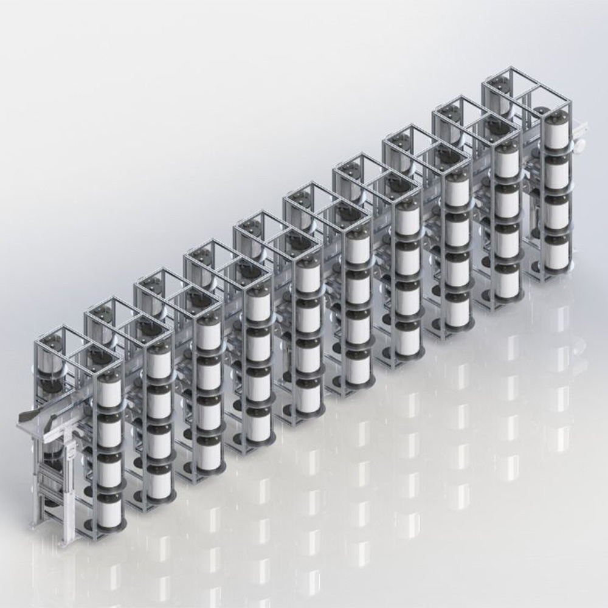

What is it about?

At the IDR Institute for the Development in Robotics, I am working on an innovative project to develop a unique painting machine. As the sole engineer on this project, I am responsible for every aspect of its development, from coding the PLC to 3D design, manufacturing, and electronics. This machine aims to automate the production of colors for car repainting, particularly in the aftermath of accidents.
This pioneering machine is the first prototype of its kind, designed to streamline and enhance the color generation process for car repainting. We are collaborating with an insurance company that seeks to automate this process, ensuring that precise color matches can be produced quickly and efficiently. This collaboration aims to significantly reduce the time and effort involved in car repainting, providing a faster and more reliable service for clients.
My role in this project encompasses a wide range of responsibilities. I am coding the PLC to control the machine's operations, designing the 3D models for its components, overseeing the manufacturing process, and handling the electronic systems that power the machine. This comprehensive involvement has provided me with invaluable hands-on experience and has allowed me to apply my engineering skills to create a practical solution for a real-world problem.
Working on this project has been both challenging and rewarding. It has given me the opportunity to push the boundaries of what is possible in robotics and automation, and to contribute to the advancement of technology in the automotive industry.